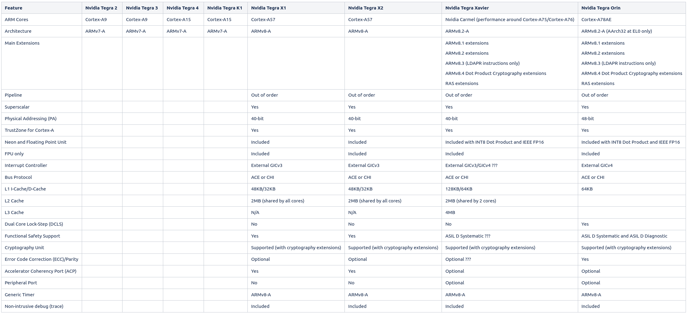
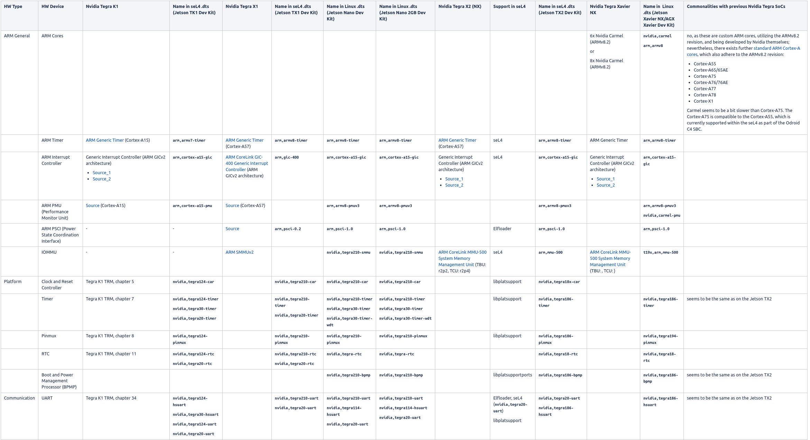
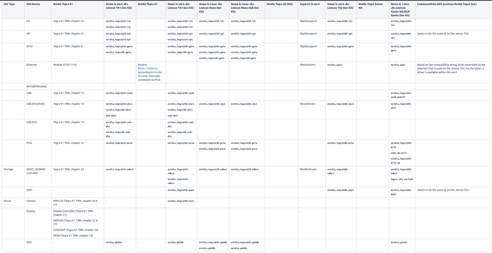

Nvidia Tegra¶
Subpages¶
CPU Comparison¶

Nvidia Hardware IP & seL4 support¶
The following table provides an overview and comparison of the hardware IP used by Nvidia for their Tegra SoCs. The information originates from the TRMs of the SoCs, the L4T sources and subsequent online research (e.g. at ARM).
 
Booting via U-Boot scripting¶
In order to boot a TRENTOS image on a Jetson board by using U-Boot, a dedicated boot script (boot.script) can be created, which allows loading an image from storage (e.g. an SD card).
One-Time Setup on U-Boot (Jetson Nano 2GB Developer Kit)¶
The Jetson Nano 2GB Developer Kit can boot either from QSPI or from microSD card. In the following, we assume a microSD card based process, as it is easier for development due to not having to always force the board into recovery mode. For preparing a microSD card, we can either:
download a prebuilt microSD image, flash it on a microSD card, and adapt its content afterwards
download the L4T Driver Package (BSP), use the jetson-disk-image-creator.sh script to create a standalone microSD image and flash it to microSD card (as described here), and adapt its content afterwards
download the L4T Driver Package (BSP) as well as the required sources (e.g. kernel, U-Boot), build the required setup from scratch, use the jetson-disk-image-creator.sh script to create a standalone microSD image and flash it to microSD card, and adapt its content afterwards
In the following, we will stick to either option 1 or 2, as we don’t need a completely custom build of the Nvidia L4T environment for now. After we have successfully written the microSD image to the microSD card, we have to modify the U-Boot startup and provide the respective TRENTOS image. By default, U-Boot searches for an extlinux.conf script, which resides in the APP partition (containing the Linux root file system) and is then able to locate and startup the Linux kernel. We don’t make use of this script and therefore have to
remove extlinux.conf from the folder /boot/extlinux (as U-Boot would otherwise always find this script first and would then ignore all other boot instructions provided by us)
create a dedicated boot.script file and fill it with the following content (assuming our TRENTOS image is named os_image.elf). The magic address 0x90100000 is pxefile_addr_r where U-Boot would also store the image obtained via TFTP when doing. Another alternative would be finding a way to calculate the size of our OS image file and put it at the end of the usable memory.
#
# ToDo: use env vars, see https://u-boot.readthedocs.io
# pxefile_addr_r = 0x90100000
# fdt_addr_r = 0x83000000
#
ext4load mmc 1:1 ${pxefile_addr_r} /boot/os_image.elf
bootelf ${pxefile_addr_r} ${fdt_addr_r}
convert boot.script to boot.scr
$ sudo apt install u-boot-tools
$ mkimage -c none -A arm -T script -d boot.script boot.scr
boot.scr has to be copied to the folder /boot on the APP partition
The respective TRENTOS image (os_image.elf) then has to be transferred to the microSD card, and therefore also has to be copied to the folder /boot on the APP partition. In case new TRENTOS images are created regularly as part of the development process, the existing image file os_image.elf in /boot has to be replaced respectively before each startup. Afterwards, insert the microSD card into the slot on the underside of the Jetson Nano 2GB module.
Booting via PXE¶
See also https://en.wikipedia.org/wiki/Preboot_Execution_Environment for a general background.
In order to boot a TRENTOS image on a Jetson board via tftpboot, the following setup has to be done.
One-Time Setup on PC¶
At first, respective tftpd dependencies have to be installed:
$ sudo apt-get install xinetd tftpd tftp
For configuring the TFTP server, we have to create the file /etc/xinetd.d/tftp with the following content (allows access from any IP in the range 10.0.0.0. - 10.0.0.255)
service tftp
{
protocol = udp
port = 69
socket_type = dgram
wait = yes
user = nobody
server = /usr/sbin/in.tftpd
server_args = /tftpboot
disable = no
only_from = 10.0.0.0/24
}
Afterwards, we have to create the TFTP server’s base directory (within Linux root directoy) and allow anyone to access it:
$ sudo mkdir /tftpboot
$ sudo chmod -R 777 /tftpboot
$ sudo chown -R nobody /tftpboot
Once the configuration is complete, the xinetd deamon should be restarted to enable the server:
$ sudo /etc/init.d/xinetd restart
Now, the TFTP server is ready to send/receive files from/via /tftpboot.
Cabling¶
We now have to connect both the PC and the Jetson board via Ethernet, e.g. on the PC-side via an USB-to-Ethernet adapter. The PC has to be configured with a static IP address, exemplarily we use the 10.0.0.10.
One-Time Setup on U-Boot (Jetson Nano, Jetson TX2 NX)¶
On the U-Boot side, we also have to assign a respective static IP address. Here, we exemplarily choose the 10.0.0.11. Therefore, the board has to be powered up regularly and the U-Boot boot process has to be interrupted in order to add the respective commands as follows within the U-Boot console:
$ setenv ipaddr 10.0.0.11
$ setenv serverip 10.0.0.10
Once the network settings have been configured, we try to ping the TFTP server to test the network connection as illustrated below:
$ ping 10.0.0.10
This should result in an output like the following:
ethernet@2490000 Waiting for PHY auto negotiation to complete....... done
Using ethernet@2490000 device
host 10.0.0.10 is alive
On the Jetson Nano 2GB Developer Kit, the official U-Boot might respond with a “No ethernet found” message. If this happens, Ethernet can be activated by explicitly enumerating the PCI devices:
Tegra210 (P3541-0000) # pci enum
Tegra210 (P3541-0000) # ping 10.0.0.10
Warning: eth_rtl8169 using MAC address from ROM
Using eth_rtl8169 device
host 10.0.0.10 is alive
Tegra210 (P3541-0000) #
We now have to configure U-Boot in order to regularly obtain a TRENTOS image during startup. The address might thereby be specific to the selected board:
$ setenv bootcmd 'pci enum; tftp 0x90000000 os_image.elf; bootelf 0x90000000'
$ saveenv
This instructs U-Boot to use the TFTP service in order to obtain a file called os_image.elf, which has to be loaded exemplarily at address 0x90000000 and then has to be started from there. The address can of course be adjusted according to individual needs.
Modification of CBoot (Jetson TX2 NX)¶
For the Jetson TX2 NX, CBoot is running as a bootloader before U-Boot. In case the functionality of CBoot shall be modified, the following steps have to be done.
Modification of CBoot source code¶
Before being able to rebuild CBoot, the following dependencies have to be solved (according to Cboot_Standalone_Readme.txt):
download the Linaro GCC toolchain provided by Nvidia for L4T 32.6.1 and extract it
set the CROSS_COMPILE environment variable
$ export CROSS_COMPILE=$PWD/<path-to-linaro-gcc-directory>/bin/aarch64-linux-gnu-
set the TEGRA_TOP and TOP environment variables within the CBoot source code root folder
$ export TEGRA_TOP=$PWD
$ export TOP=$PWD
Afterwards, CBoot can be rebuilt by issuing the following command within the CBoot source code root folder:
$ make -C ./bootloader/partner/t18x/cboot PROJECT=t186 TOOLCHAIN_PREFIX="${CROSS_COMPILE}" DEBUG=2 BUILDROOT="${PWD}"/out NV_BUILD_SYSTEM_TYPE=l4t NOECHO=@
The build output is located at ./out/build-t186/. We then have to rename the corresponding CBoot binary lk.bin to cboot.bin.
$ mv ./out/build-t186/lk.bin ./out/build-t186/cboot.bin
cboot.bin now has to be copied to the /Linux_for_Tegra/bootloader/ directory for replacing the existing CBoot, so it can be considered during the subsequent re-flashing process.
Re-flashing the SBC¶
Afterwards, the board has to be re-flashed, so that the provided modifications to cboot.bin can finally take effect.
$ sudo ./flash.sh jetson-xavier-nx-devkit-tx2-nx mmcblk0p1
One-Time Setup on CBoot (Jetson Xavier NX)¶
As from the Jetson Xavier NX on, Nvidia skipped U-Boot support in favor of their custom bootloader CBoot. CBoot provides general TFTP boot support, but it must be enabled manually first by modifying different locations. Currently, the following boards are supported:
Jetson Xavier NX Developer Kit
Aetina AN110-XNX
Modification of CBoot source code¶
CBoot in general expects two files being located at the /tftpboot directory:
jetson.dtb
boot.img
The jetson.dtb file is of no further relevance to the seL4/TRENTOS environment, but CBoot fails in case the file isn’t found. We therefore just provide the regular L4T kernel DTB file (e.g. /Linux_for_Tegra/bootloader/tegra194-p3668-all-p3509-0000.dtb) and rename it to jetson.dtb. The boot.img file is created with the help of the Android mkbootimg utility (which is shipped with the L4T SDK) and usually contains the respective Linux kernel as well as the corresponding initrd file. The overall boot.img file additionally gets signed during the regular L4T flashing process. The pre-provided CBoot bootloader binary shipped with the L4T SDK therefore by default rejects every unsigned image. Hence, we have to modify the available CBoot source code in order to allow for loading unsigned images and have to rebuild and re-flash the CBoot binary. Respective modifications have to be done to the file
CONFIG_ENABLE_SECURE_BOOT=1
CONFIG_ENABLE_EXTLINUX_BOOT=1
Before being able to rebuild CBoot, the following dependencies have to be solved (according to Cboot_Standalone_Readme_t194.txt):
download the Linaro GCC toolchain provided by Nvidia for L4T 32.6.1 and extract it
set the CROSS_COMPILE environment variable
$ export CROSS_COMPILE=$PWD/<path-to-linaro-gcc-directory>/bin/aarch64-linux-gnu-
set the TEGRA_TOP and TOP environment variables within the CBoot source code root folder
$ export TEGRA_TOP=$PWD
$ export TOP=$PWD
Afterwards, CBoot can be rebuilt by issuing the following command within the CBoot source code root folder:
make -C ./bootloader/partner/t18x/cboot PROJECT=t194 TOOLCHAIN_PREFIX="${CROSS_COMPILE}" DEBUG=2 BUILDROOT="${PWD}"/out NV_TARGET_BOARD=t194ref NV_BUILD_SYSTEM_TYPE=l4t NOECHO=@
The build output is located at ./out/build-t194/. We then have to rename the corresponding CBoot binary lk.bin to cboot_t194.bin.
$ mv ./out/build-t194/lk.bin ./out/build-t194/cboot_t194.bin
cboot_t194.bin now has to be copied to the /Linux_for_Tegra/bootloader/ directory for replacing the existing CBoot, so it can be considered during the subsequent re-flashing process.
Configuring TFTP boot¶
By default, the Jetson Xavier NX platform is configured to ignore network boot. We therefore have to explicitly set the respective dependencies within the corresponding configuration file. This file is provided in form of /Linux_for_Tegra/bootloader/cbo.dtb. At first, we therefore have to convert the .dtb file into a corresponding .dts file.
$ dtc -I dtb -O dts cbo.dtb > cbo.dts
Afterwards, we can modify the cbo.dts file by
placing the net command at the first position of the boot order
disabling dhcp
enabling and setting a respective static IP address configuration (here: using the same settings as provided for the U-boot setup above)
The resulting file can be found below.
/*
* Copyright (c) 2018-2020, NVIDIA CORPORATION. All rights reserved.
*
* NVIDIA CORPORATION and its licensors retain all intellectual property
* and proprietary rights in and to this software, related documentation
* and any modifications thereto. Any use, reproduction, disclosure or
* distribution of this software and related documentation without an express
* license agreement from NVIDIA CORPORATION is strictly prohibited.
*/
/dts-v1/;
/ {
compatible = "nvidia,cboot-options-v1";
boot-configuration {
/* nvme boot-order can be in "nvme:C<n>", "nvme:pcie@<addr>", or "nvme" format */
boot-order = "net", "sd", "usb", "nvme", "emmc";
tftp-server-ip = /bits/ 8 <10 0 0 10>;
/* dhcp-enabled; */
/* remove dhcp-enabled if uncommenting static-ip configuration */
static-ip = /bits/ 8 <10 0 0 11>;
ip-netmask = /bits/ 8 <255 255 255 0>;
ip-gateway = /bits/ 8 <10 0 0 1>;
};
};
We then have to convert the .dts file back to a .dtb file, so it can be considered during the subsequent re-flashing process.
$ sudo ./flash.sh jetson-xavier-nx-devkit-qspi mmcblk0p1
Regular Image Deployment¶
In order to update an image during development,the following steps have to be taken in accordance to the respective Jetson platform.
Jetson Nano and Jetson TX2 NX¶
We only have to copy a newly created os_image.elf file from our development folder to the /tftpboot directory.
$ sudo cp os_image.elf /tftpboot/
When we power up the Jetson board, U-boot will then automatically download the new image.
Jetson Xavier NX¶
Instead of using an .elf file, the Jetson Xavier NX platform expects a binary file to be wrapped inside the required boot.img file. The TRENTOS build flow was already adapted to provide a respective os_image.binary. With the help of the Android mkbootimg utility (here: expected to reside in the respective TRENTOS build folder <build-…>/images), we then convert the .binary file into the requested boot.img file.
$ ./mkbootimg --kernel os_image.binary --ramdisk NONE --board mmcblk0p1 --output boot.img
The resulting boot.img file then has to be copied from our development folder to the /tftpboot directory.
$ sudo cp boot.img /tftpboot/